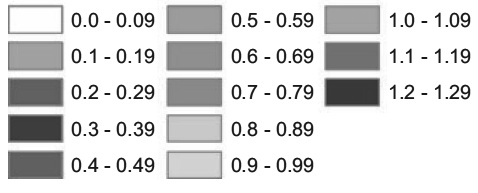

- thumbnail image
- 본 글은 번역글입니다.
원본 주소 : https://eagereyes.org/basics/rainbow-color-map
번역 철학 : 매끄럽게 읽으실 수 있는 적절한 의역을 지향합니다.
전문 용어 : 가급적 우리말 용어를 사용하고자 하며, 원어를 병기합니다.
ROBERT KOSARA/ 2013년 7월 7일
Rainbow 컬러맵은 우리를 어떻게 호도하는가
색깔은 시각화 특성중 부지불식간에 가장 많이 오용되는 인자일 것입니다. 변종들을 포함해 Rainbow 컬러맵은 가장 널리 쓰이는 색이지만, 동시에 가장 문제가 되고 오해를 불러일으키기도 합니다.
Rainbow 컬러맵은 빛의 스펙트럼에 근간하여 때론 올바르게, 때론 잘못된 순서로 배열됩니다. 무지개색의 이름을 한번 봅시다. 벌써 여기에 문제의 일면이 있습니다. 이 색들이 일관되게 사용되었다고 해도, 아무도 올바른 순서를 알지 못할 것입니다. 여러분의 대뇌에 탑재된 그림을 한 장 보시겠습니다(위키피디아 인용)
이제 Journal of the American Water Resources Association에 실린 수자원에 대한 논문에서 가져온 지도를 한 장 보시겠습니다. Cliff Mass의 멋진 날씨 블로그에서 가져온 이 그림이 의미하는 바는 (알래스카와 하와이를 제외한, 북미 대륙의) 미국 48개 서로 인접한 주 카운티의 증발산량(증발로 인한 우수 손실)입니다.
나라가 동서로 갈라진 모습이 보이나요? 동쪽 절반은 모조리 어두운 녹색과 파란색인 반면 서쪽 절반은 죄다 밝은 녹색, 노랑, 주황색입니다. 물론 이 둘 사이에는 큰 차이가 있습니다.
하지만 범례를 조금 자세히 들여다봅시다.
범례에 잘 드러나있듯 값은 부드럽게 바뀌지만 색은 그렇지 않습니다. 여기엔 문제점이 두 개 있습니다: 색의 밝기로 인식되는 휘도luminance가 급격히 변한다는 것, 그리고 색상hue이 동시에 변한다는 것입니다.
휘도Luminance
휘도가 부드럽게 바뀌는 부분과 급격히 바뀌는 부분이 혼재되어 있으면 지도상에 명확히 다른 영역들이 있는 것처럼 보입니다. 범례에 색상을 제외하고 휘도만 나타내면 더 명백하게 드러납니다.

0.3-0.39 사이의 색은 주변보다 어둡고, 0.5-0.59, 0.6-0.69, 0.7-0.79는 거의 구분이 가지 않다가 0.8-0.89에서 갑자기 점프합니다. 데이터 측면에서의 구간 크기는 일정하므로 색 구성으로 인한 부작용일 따름입니다.
색상Hue
그리고 무엇보다 색상이 변합니다. 앞서 설명했듯 색상은 우리의 색깔 인지에 상당한 영향을 미칩니다 (역자주: 사람들은 이름을 알고 있는 색상만을 인지한다고 합니다.). 범례 전체를 다시 보고 색상을 꼽아봅시다.
- 흰색
white(0.0-0.09). 범례 시작으로 정말 잘못된 선택입니다. 지도의 배경이 흰색이기 때문이고, 흰색, 회색, 검정 같은 무채색은 결측치와 같은 특별한 경우에만 사용되어야 합니다. 이와 관련된 내용은 본 글의 범위를 벗어나므로 다루지 않겠습니다. - 핑크
pink(0.1-0.19, 0.2-0.29). 이 둘만 놓고 보면 괜찮습니다. - 보라
purple(0.3-0.39). 색이 바뀌었습니다. 훨씬 더 어둡습니다. - 파랑
blue(0.4-0.49, 0.5-0.59). 또 다른 색이 등장했는데 명도의 방향이 핑크일 때와 반대로 갑니다. 여기에서는 더 밝은 색이 더 큰 값을 나타내고 있습니다. - 녹색
green(0.6-0.69, 0.7-0.79). 또 다른 색이 나왔습니다.이 둘은 사실상 같은 색입니다. - 연두
greenish yellow(0.8-0.89). 색상이 또 한번 바뀌었습니다. 이번엔 휘도가 갑자기 증가했는데 뚜렷한 이유는 없습니다. - 노랑
yellow(0.9-0.99). 일곱번째 색상이지만 아직 끝난 것이 아닙니다. - 주황색, 갈색
orange and brown(1.0 이상). 사람에 따라 다른 색으로 볼 수도 있겠지만 마지막에 있는 갈색과 노랑을 섞어 주황색을 만들 수 있습니다 (사실 갈색은 매우 어둡고 채도가 빠진 주황색이지만 독자적인 이름을 가지고 있습니다).
결과적으로 여덟 가지 색상이 있는데, 휘도는 널뛰고 심지어 변하는 방향이 일정하지도 않습니다. 끔찍한 컬러맵의 아주 좋은 예이며, 동시에 과학 문헌에 몹시 빈번하게 등장합니다.
본명 하나 이상의 색상을 사용해야 할 때가 있습니다. 구분되어 논의되어야 할 의미있는 구간이 여럿 있는 경우, 또는 어는 점 이상/이하처럼 구분이 내재되어 있는 경우입니다. 하지만 위에서 살펴본 예는 여기에 해당하지 않습니다.
rainbow를 사용하는 이유?
이런 논점들을 놓고 볼 때, 변종을 포함한 rainbow는 왜 이렇게 널리 쓰이는 걸까요? 제 생각에 답은 매우 간단합니다. 매력적이기 때문입니다. 데이터를 보이는 데 단일 색상을 사용하는 것이 논리적으로 효과적이지만 훨씬 심심합니다. 게다가 개별 값들을 읽고자 할 때 특정 색상이 드러나지 않는 단조변화는 사실 더 불리합니다. 비록 그 대가로 치르는 부작용이 크지만 말입니다.
색상을 하나 또는 둘 사용해서 위 사례에서 드러난 문제점 없이 컬러맵을 구성할 수 있습니다. 첫 번째 방법은 휘도를 고정하거나 단조증가시키는 경우입니다 (휘도가 증가/감소하는 방향이 바뀌지 않는다는 뜻입니다). 휘도를 고정하면 색상이 지루해지는 경향이 있지만 휘도가 증가하도록 컬러맵을 잘 구성하면 제법 괜찮습니다. 이런 기능이 ColorBrewer에 구현되어 있습니다.
대안
시각화를 하는 사람이라면 누구나, 누구나 ColorBrewer를 알고 있습니다. 너무나 유명한 사이트이기 때문에 여기에 다시 링크를 걸 필요도 없지만 매우 부적절한 컬러맵을 사용하는 논문들은 여전히 매년 쏟아지고 있습니다.
ColorBrewer는 사용시 유의할 점이 있지만 좋은 컬러맵을 고를 수 있도록 설명글을 제공하고 있습니다. 대개 범주형 변수에만 적용된다는 제약이 있기는 하지만 ColorBrewer 색상은 D3와 같은 많은 시각화 패키지에서 사용 가능합니다.
Adobe에서 제공하는 Kuler에서도 컬러 팔레트를 디자인할 수 있지만 잘 사용하려면 어느 정도의 지식이 필요합니다. Kuler에 보기 좋은 컬러맵들이 많이 있지만 데이터 시각화용으로 설계된 것은 아닙니다.
Borland와 Taylor의 “Rainbow Color Map (Still) Considered Harmful”논문을 들어본 사람들은 많지만 정작 읽어본 사람은 얼마 없습니다. 이 논문에서는 가공 데이터를 이용해 문제를 드러내고 있으며 제가 이 글에서 말씀드린 것보다 훨씬 깊게 들어갑니다. 그러나 과학 학술지에 출간된 실제 예시를 활용하면 독자들이 더 절감할 것이라 생각합니다.
연속된 값을 매핑할 때 단일 색상의 명도를 변화시키는 것은 언제나 안전합니다. 흥미를 유발하기엔 약하겠지만 적어도 데이터 관점에서는 올바르다고 볼 수 있습니다. 둘 이상의 색상을 사용할 때는 심미적인 목적 뿐 아니라 명확한 의도를 가져야 합니다.
결론
인지적 관점에서 시각화의 중요성에도 불구하고 색에 대한 이해는 놀라울만큼 낮은 수준입니다. 사람들은 기본 색상에 안주하거나 그저 보기에 예쁜 색을 아무렇게나 고르는 듯 합니다. 그러나 충분한 고민 없이 색을 고르면, 여러분의 시각화 결과물에 상당한 피해를 입힐 수 있다는 것을 알아야 합니다.